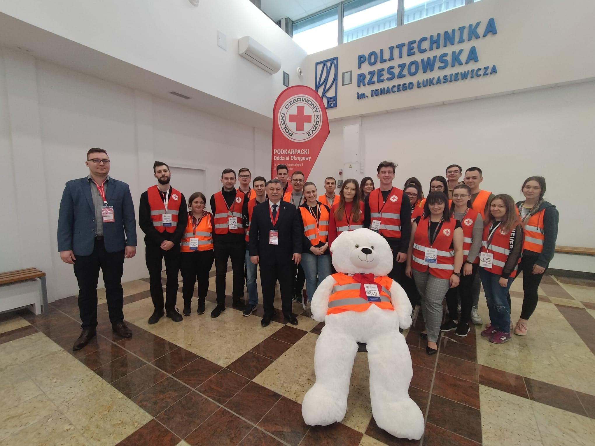
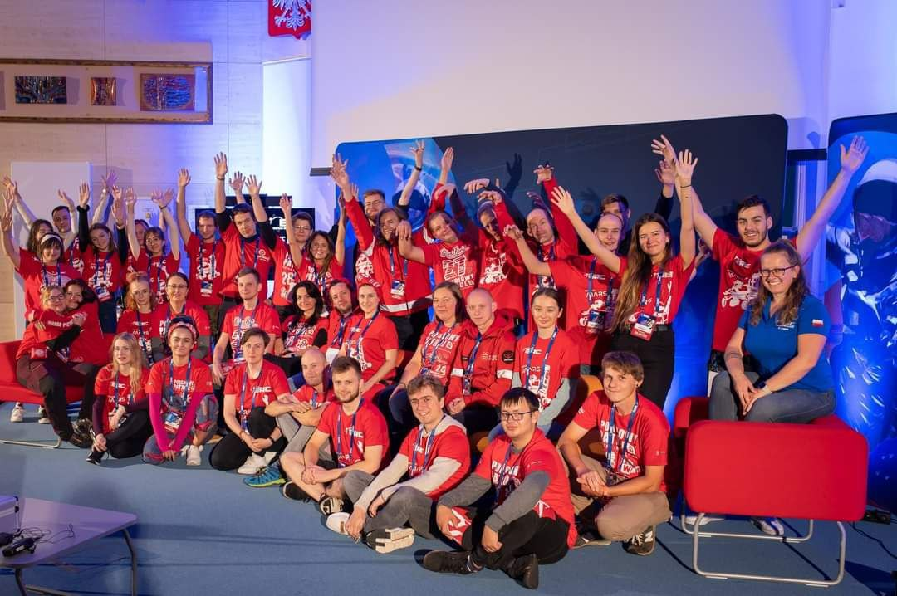
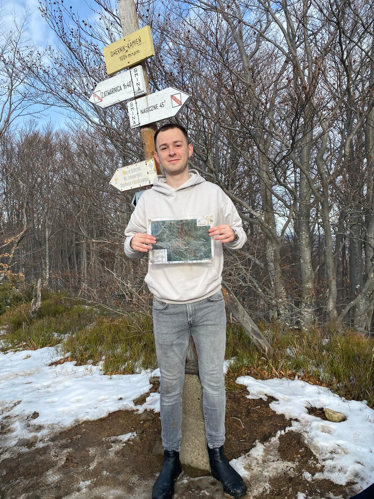
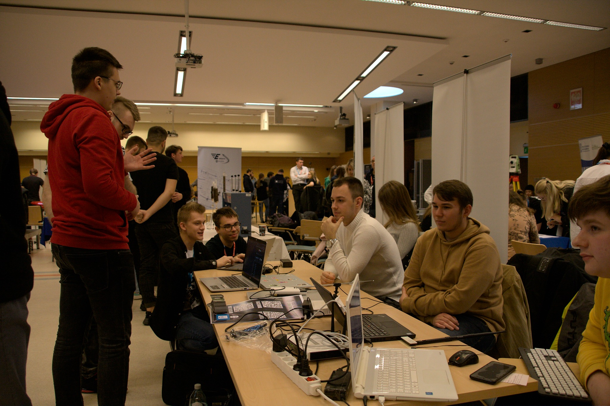
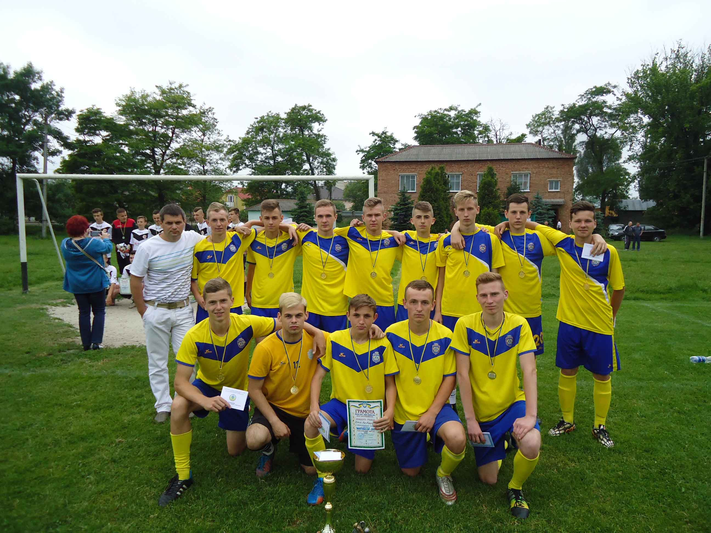
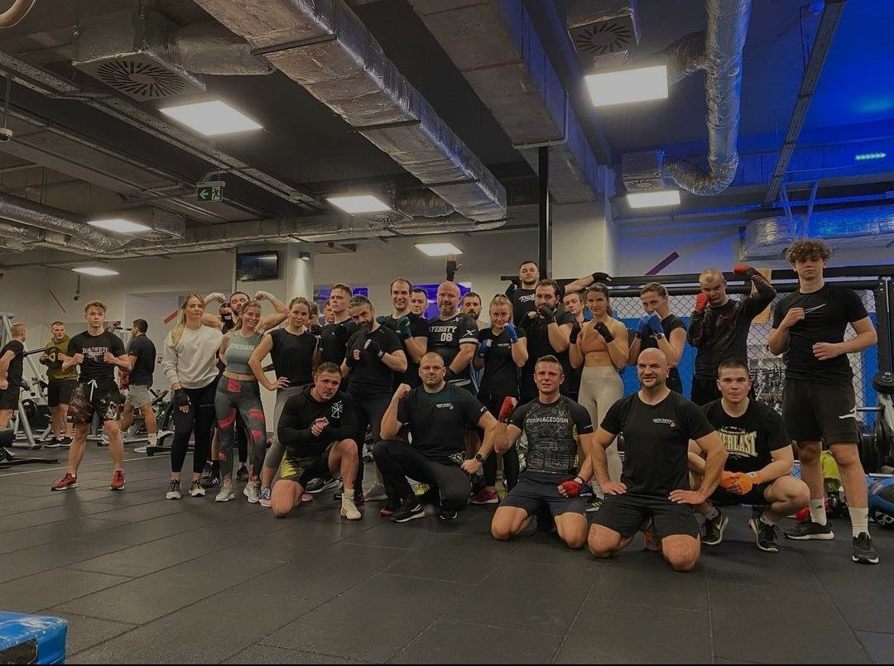
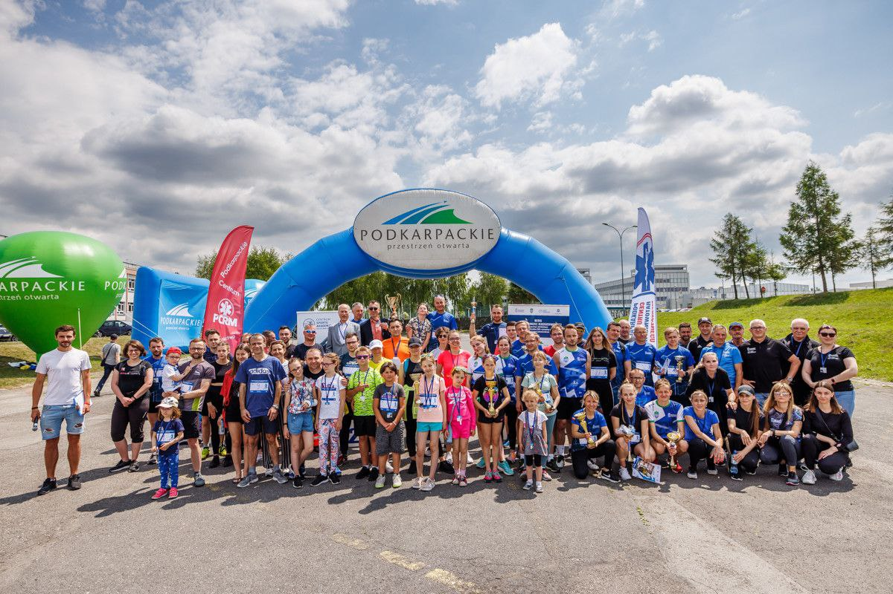
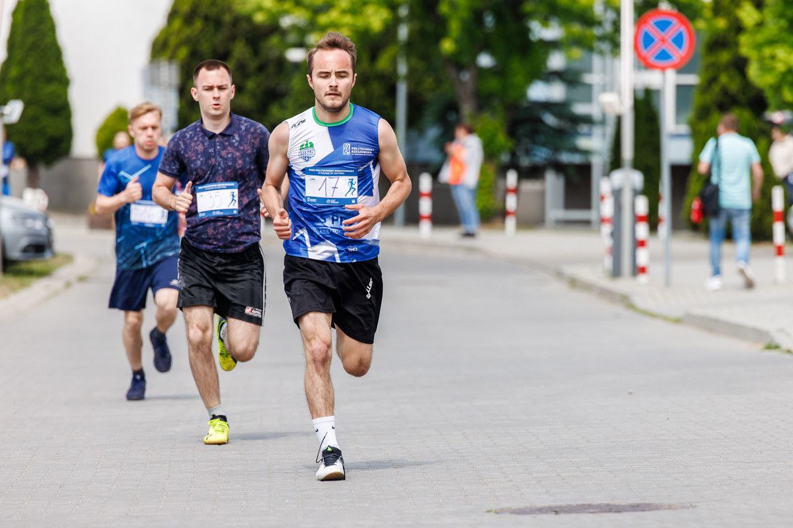

Poza studiami i nauką, mam także życie prywatne, w którym też dzieją się ciekawe rzeczy. Więc chciałbym podzielić się z wami tymi chwilami.
Wolontariusz
"PROJEKTOR" jest programem Polsko-Amerykańskiej Fundacji Wolności, realizowanym przez Fundację Edukacyjną Przedsiębiorczości. Jest to inicjatywa, która łączy aktywnych studentów, otwartych i zaangażowanych nauczycieli oraz ekspertów w dziedzinie innowacyjnej edukacji. Celem programu jest dotarcie z autorskimi zajęciami rozwojowymi dla dzieci do najmniejszych zakątków Polski.
Link do zdjęć

Wolontariusz
Jako wolontariusz, miałem przyjemność pracować z Centrum Pomocy Ukrainie Polskiego Czerwonego Krzyża oraz z Politechniką Rzeszowską.
Wolontariusz na ERC
Byłem wolontariuszem na European Rover Challenge (ERC) - największym w Europie międzynarodowym wydarzeniu kosmicznym, łączącym zawody łazików marsjańskich z pokazami naukowo-technologicznymi.


Podróże
Podróże to moja pasja, która pozwala mi odkrywać nowe miejsca i doświadczać niesamowitych przygód. Uwielbiam wspinanie się na szczyty gór, oddychać świeżym powietrzem i podziwiać malownicze krajobrazy. Lubię też zwiedzać piękne miasta i cieszyć się ich architekturą oraz kulturą. Nie ma nic piękniejszego niż odkrywanie świata i poznawanie jego różnorodności.
Link do zjęćKoło naukowe "Something About IT Security"
Jesteśmy grupą studentów zainteresowanych bezpieczeństwem systemów i sieci komputerowych, testami penetracyjnymi, ochroną tożsamości oraz bezpieczeństwem informacji. Corocznie w siedzibie Politechniki prowadzimy konferencję, na którą zapraszamy prelegentów ze świata bezpieczeństwa IT.


Piłka nożna
Piłka nożna to dla mnie pasja, która towarzyszy mi od dzieciństwa. Kiedyś miałem okazję grać nawet w drużynie zawodowej, ale teraz bardziej cieszę się z oglądania meczów i śledzenia wyników moich ulubionych drużyn. Dla mnie to nie tylko emocjonujące widowisko, ale również źródło wiedzy o strategii, taktyce oraz psychologii sportowej. Uważam, że piłka nożna to nie tylko gra, ale także sposób na życie i rozwijanie się w różnych aspektach.
Link do zjęćTreningi z boksu
W ostatnim czasie odkryłem dla siebie nową pasję - boks. Od pół roku regularnie uczęszczam na treningi, podczas których rozwijam swoją kondycję fizyczną oraz zdobywam nowe umiejętności. Chodzenie na zajęcia pozwala mi również oderwać się od codzienności i skupić na wyzwaniach, jakie stawia przed mną ten wymagający sport.


Bieg o puchar Rektora
Bieg o puchar Rektora to coroczne wydarzenie, które gromadzi studentów i pracowników naszej uczelni. To nie tylko okazja do rywalizacji i pokazania swoich sportowych umiejętności, ale także do integracji i wspólnej zabawy. Każdy, niezależnie od poziomu zaawansowania, może wziąć udział w biegu i przeżyć niesamowite emocje. Dla mnie to nie tylko sportowe wyzwanie, ale również okazja do spotkania nowych ludzi i przeżycia niezapomnianych chwil.
Bieg o puchar Rektora
Bieg o puchar Rektora to coroczne wydarzenie, które gromadzi studentów i pracowników naszej uczelni. To nie tylko okazja do rywalizacji i pokazania swoich sportowych umiejętności, ale także do integracji i wspólnej zabawy. Każdy, niezależnie od poziomu zaawansowania, może wziąć udział w biegu i przeżyć niesamowite emocje. Dla mnie to nie tylko sportowe wyzwanie, ale również okazja do spotkania nowych ludzi i przeżycia niezapomnianych chwil.



{kind=link}
{kind=link}
{kind=link}
{kind=link}
{kind=link}
{kind=link}